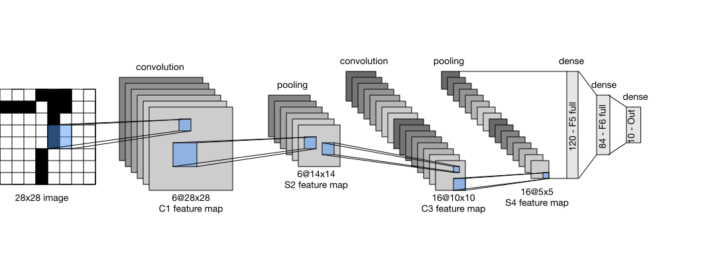
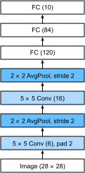

7.6. 卷积神经网络（LeNet）¶
现在，我们已经具备了 组装一个功能完备的 CNN 所需的全部要素。 在之前处理图像数据时，我们对 Fashion-MNIST 数据集中的服装图片应用了 带 softmax 回归的线性模型（4.4节） 和多层感知机（5.2节）。 为了使这类数据适合处理，我们首先将每幅图像从\(28\times28\)的矩阵 展平为一个固定长度的\(784\)维向量， 然后用全连接层对其进行处理。 既然我们已经掌握了卷积层， 就可以保留图像中的空间结构。 用卷积层替换全连接层的另一个好处是， 我们将获得参数少得多的更简约的模型。
在本节中，我们将介绍LeNet， 它是最早发表的 CNN 之一， 因其在计算机视觉任务上的性能而广受关注。 该模型由当时在 AT&T 贝尔实验室工作的研究者 Yann LeCun 提出（并以他的名字命名）， 目的是识别图像中的手写数字 (LeCun et al., 1998)。 这项工作代表了 十年技术研发的顶峰； LeCun 的团队发表了第一项 通过反向传播成功训练 CNN 的研究 (LeCun et al., 1989)。
当时，LeNet 取得了出色的结果， 与支持向量机（当时监督学习中的主流方法）的性能相匹配， 每个数字的错误率低于1%。 LeNet 最终被改造用于识别数字， 以处理 ATM 机中的存款。 时至今日，一些 ATM 机仍在运行 Yann LeCun 和他的同事 Leon Bottou 在20世纪90年代编写的代码！
import torch
from torch import nn
from d2l import torch as d2l
from mxnet import autograd, gluon, init, np, npx
from mxnet.gluon import nn
from d2l import mxnet as d2l
npx.set_np()
from types import FunctionType
import jax
from flax import linen as nn
from jax import numpy as jnp
from d2l import jax as d2l
import tensorflow as tf
from d2l import tensorflow as d2l
7.6.1. LeNet¶
从高层来看，LeNet（LeNet-5）由两部分组成： (i) 由两个卷积层组成的卷积编码器； (ii) 由三个全连接层组成的稠密块。 其架构概括在 图7.6.1 中。

图7.6.1 LeNet 中的数据流。输入是一幅手写数字图像，输出是10个可能结果上的概率。¶
每个卷积块中的基本单元 是卷积层、sigmoid 激活函数 以及随后的平均汇聚操作。 注意，虽然 ReLU 和最大汇聚效果更好， 但当时它们尚未被发现。 每个卷积层使用\(5\times 5\)的核 和 sigmoid 激活函数。 这些层将空间排列的输入 映射为若干二维特征图，通常 会增加通道数。 第一个卷积层有6个输出通道， 第二个有16个。 每个\(2\times2\)汇聚操作（步幅2） 通过空间下采样将维度缩小\(4\)倍。 卷积块输出的形状为 （批量大小，通道数，高度，宽度）。
为了将卷积块的输出 传递给稠密块， 我们必须将小批量中的每个样例展平。 换句话说，我们取这个四维输入，并将其变换为 全连接层所期望的二维输入： 提醒一下，我们所需的二维表示用第一个维度索引小批量中的样例， 用第二个维度给出每个样例的展平向量表示。 LeNet 的稠密块有三个全连接层， 分别有120、84和10个输出。 因为我们仍在执行分类， 所以10维的输出层对应于 可能的输出类别数。
要真正理解 LeNet 内部发生了什么，可能需要费一番功夫，
但我们希望下面的代码片段能让你相信： 用现代深度学习框架实现这类模型
是极其简单的。 我们只需实例化一个Sequential块，
并将合适的层依次串联起来， 同时使用 5.4.2.2节 中 介绍的
Xavier 初始化。
def init_cnn(module): #@save
"""Initialize weights for CNNs."""
if type(module) == nn.Linear or type(module) == nn.Conv2d:
nn.init.xavier_uniform_(module.weight)
class LeNet(d2l.Classifier): #@save
"""The LeNet-5 model."""
def __init__(self, lr=0.1, num_classes=10):
super().__init__()
self.save_hyperparameters()
self.net = nn.Sequential(
nn.LazyConv2d(6, kernel_size=5, padding=2), nn.Sigmoid(),
nn.AvgPool2d(kernel_size=2, stride=2),
nn.LazyConv2d(16, kernel_size=5), nn.Sigmoid(),
nn.AvgPool2d(kernel_size=2, stride=2),
nn.Flatten(),
nn.LazyLinear(120), nn.Sigmoid(),
nn.LazyLinear(84), nn.Sigmoid(),
nn.LazyLinear(num_classes))
class LeNet(d2l.Classifier): #@save
"""The LeNet-5 model."""
def __init__(self, lr=0.1, num_classes=10):
super().__init__()
self.save_hyperparameters()
self.net = nn.Sequential()
self.net.add(
nn.Conv2D(channels=6, kernel_size=5, padding=2,
activation='sigmoid'),
nn.AvgPool2D(pool_size=2, strides=2),
nn.Conv2D(channels=16, kernel_size=5, activation='sigmoid'),
nn.AvgPool2D(pool_size=2, strides=2),
nn.Dense(120, activation='sigmoid'),
nn.Dense(84, activation='sigmoid'),
nn.Dense(num_classes))
self.net.initialize(init.Xavier())
class LeNet(d2l.Classifier): #@save
"""The LeNet-5 model."""
lr: float = 0.1
num_classes: int = 10
kernel_init: FunctionType = nn.initializers.xavier_uniform
def setup(self):
self.net = nn.Sequential([
nn.Conv(features=6, kernel_size=(5, 5), padding='SAME',
kernel_init=self.kernel_init()),
nn.sigmoid,
lambda x: nn.avg_pool(x, window_shape=(2, 2), strides=(2, 2)),
nn.Conv(features=16, kernel_size=(5, 5), padding='VALID',
kernel_init=self.kernel_init()),
nn.sigmoid,
lambda x: nn.avg_pool(x, window_shape=(2, 2), strides=(2, 2)),
lambda x: x.reshape((x.shape[0], -1)), # flatten
nn.Dense(features=120, kernel_init=self.kernel_init()),
nn.sigmoid,
nn.Dense(features=84, kernel_init=self.kernel_init()),
nn.sigmoid,
nn.Dense(features=self.num_classes, kernel_init=self.kernel_init())
])
class LeNet(d2l.Classifier): #@save
"""The LeNet-5 model."""
def __init__(self, lr=0.1, num_classes=10):
super().__init__()
self.save_hyperparameters()
self.net = tf.keras.models.Sequential([
tf.keras.layers.Conv2D(filters=6, kernel_size=5,
activation='sigmoid', padding='same'),
tf.keras.layers.AvgPool2D(pool_size=2, strides=2),
tf.keras.layers.Conv2D(filters=16, kernel_size=5,
activation='sigmoid'),
tf.keras.layers.AvgPool2D(pool_size=2, strides=2),
tf.keras.layers.Flatten(),
tf.keras.layers.Dense(120, activation='sigmoid'),
tf.keras.layers.Dense(84, activation='sigmoid'),
tf.keras.layers.Dense(num_classes)])
在复现 LeNet 时，我们做了一点自由处理，把 高斯激活层替换成了 softmax 层。这大大简化了实现，尤其是因为 如今很少使用高斯解码器。除此之外，这个网络 与原版 LeNet-5 架构一致。
让我们看看网络内部发生了什么。将一个 单通道（黑白） \(28 \times 28\)的图像输入网络， 并打印每一层的输出形状， 我们就可以检查模型，以确保 其运算与我们期望的 图7.6.2 一致。
让我们看看网络内部发生了什么。将一个 单通道（黑白） \(28 \times 28\)的图像输入网络， 并打印每一层的输出形状， 我们就可以检查模型，以确保 其运算与我们期望的 图7.6.2 一致。
让我们看看网络内部发生了什么。将一个 单通道（黑白）
\(28 \times 28\)的图像输入网络， 并打印每一层的输出形状，
我们就可以检查模型，以确保 其运算与我们期望的 图7.6.2
一致。 Flax 提供了nn.tabulate，这是一个用于汇总网络中
各个层和参数的巧妙方法。这里我们使用bind方法创建绑定模型。
此时变量被绑定到d2l.Module类，即这个绑定模型
变成了一个有状态对象，随后可以用它来访问Sequential
对象属性net以及其中的layers。注意，bind方法
只应用于交互式实验，它并不是apply方法的直接 替代品。
让我们看看网络内部发生了什么。将一个 单通道（黑白） \(28 \times 28\)的图像输入网络， 并打印每一层的输出形状， 我们就可以检查模型，以确保 其运算与我们期望的 图7.6.2 一致。

图7.6.2 LeNet-5 的压缩记法。¶
@d2l.add_to_class(d2l.Classifier) #@save
def layer_summary(self, X_shape):
X = torch.randn(*X_shape)
for layer in self.net:
X = layer(X)
print(layer.__class__.__name__, 'output shape:\t', X.shape)
model = LeNet()
model.layer_summary((1, 1, 28, 28))
@d2l.add_to_class(d2l.Classifier) #@save
def layer_summary(self, X_shape):
X = np.random.randn(*X_shape)
for layer in self.net:
X = layer(X)
print(layer.__class__.__name__, 'output shape:\t', X.shape)
model = LeNet()
model.layer_summary((1, 1, 28, 28))
@d2l.add_to_class(d2l.Classifier) #@save
def layer_summary(self, X_shape, key=d2l.get_key()):
X = jnp.zeros(X_shape)
params = self.init(key, X)
bound_model = self.clone().bind(params, mutable=['batch_stats'])
_ = bound_model(X)
for layer in bound_model.net.layers:
X = layer(X)
print(layer.__class__.__name__, 'output shape:\t', X.shape)
model = LeNet()
model.layer_summary((1, 28, 28, 1))
@d2l.add_to_class(d2l.Classifier) #@save
def layer_summary(self, X_shape):
X = tf.random.normal(X_shape)
for layer in self.net.layers:
X = layer(X)
print(layer.__class__.__name__, 'output shape:\t', X.shape)
model = LeNet()
model.layer_summary((1, 28, 28, 1))
注意，在整个卷积块中， 每一层表示的高度和宽度 （与上一层相比）都在减小。 第一个卷积层使用两个像素的填充， 以补偿使用\(5 \times 5\)的核原本 会导致的高度和宽度缩减。 顺便说一句，原始 MNIST OCR 数据集中\(28 \times 28\)像素的图像尺寸， 是从尺寸为\(32 \times 32\)像素的 原始扫描图像中裁剪掉两行（和两列）像素的结果。这样做主要是为了 节省空间（减少30%），在那个兆字节还很宝贵的年代。
相比之下，第二个卷积层不使用填充， 因此高度和宽度都减少四个像素。 随着我们逐层向上， 通道数逐层增加： 从输入中的1个，到第一个卷积层后的6个， 再到第二个卷积层后的16个。 然而，每个汇聚层都会将高度和宽度减半。 最后，每个全连接层都会降低维度， 最终输出的维度 与类别数相匹配。
7.6.2. 训练¶
既然我们已经实现了模型， 就让我们做一个实验，看看 LeNet-5 模型在 Fashion-MNIST 上的表现如何。
虽然 CNN 的参数更少， 但它们计算起来仍可能比
深度相近的多层感知机更昂贵， 因为每个参数参与的 乘法运算要多得多。
如果你可以使用 GPU，那么现在 正是让它发挥作用以加速训练的好时机。 注意，
d2l.Trainer类会处理所有细节。 默认情况下，它会在
可用的设备上初始化模型参数。 与多层感知机一样，我们的损失函数是交叉熵，
并通过小批量随机梯度下降来最小化它。
trainer = d2l.Trainer(max_epochs=10, num_gpus=1)
data = d2l.FashionMNIST(batch_size=128)
model = LeNet(lr=0.1)
model.apply_init([next(iter(data.get_dataloader(True)))[0]], init_cnn)
trainer.fit(model, data)
trainer = d2l.Trainer(max_epochs=10, num_gpus=1)
data = d2l.FashionMNIST(batch_size=128)
model = LeNet(lr=0.1)
trainer.fit(model, data)
trainer = d2l.Trainer(max_epochs=10, num_gpus=1)
data = d2l.FashionMNIST(batch_size=128)
model = LeNet(lr=0.1)
trainer.fit(model, data)
trainer = d2l.Trainer(max_epochs=10)
data = d2l.FashionMNIST(batch_size=128)
with d2l.try_gpu():
model = LeNet(lr=0.1)
trainer.fit(model, data)
7.6.3. 小结¶
在本章中，我们取得了重大进展。我们从20世纪80年代的多层感知机走到了90年代和21世纪初的 CNN。所提出的架构，例如 LeNet-5 这一形式，时至今日仍然有意义。值得比较以下几组在 Fashion-MNIST 上可达到的错误率：LeNet-5 的错误率，与多层感知机（5.2节）所能达到的最好结果，以及与 ResNet（8.6节）等先进得多的架构所能达到的结果。LeNet 与后者相似得多，而与前者相去甚远。正如我们将看到的，主要差异之一是更多的计算量使得复杂得多的架构成为可能。
第二个差异是我们实现 LeNet 相对轻松。过去需要花费数月的 C++ 和汇编代码才能完成的工程难题、改进 SN（一个早期基于 Lisp 的深度学习工具 (Bottou and Le Cun, 1988)）的工程工作，以及最终的模型实验，如今几分钟就能完成。正是这种惊人的生产力提升，极大地推动了深度学习模型开发的普及。在下一章中，我们将沿着这条线索继续深入，看看它会带我们走向何方。
7.6.4. 练习¶
让我们对 LeNet 进行现代化改造。实现并测试以下改动：
用最大汇聚替换平均汇聚。
用 ReLU 替换 softmax 层。
尝试改变 LeNet 风格网络的规模，以在最大汇聚和 ReLU 之外进一步提高其准确率。
调整卷积窗口大小。
调整输出通道数。
调整卷积层数。
调整全连接层数。
调整学习率和其他训练细节（例如初始化和轮数）。
在原始 MNIST 数据集上试试改进后的网络。
显示 LeNet 第一层和第二层对不同输入（例如毛衣和外套）的激活。
当你向网络输入差异很大的图像（例如猫、汽车甚至随机噪声）时，激活会发生什么变化？